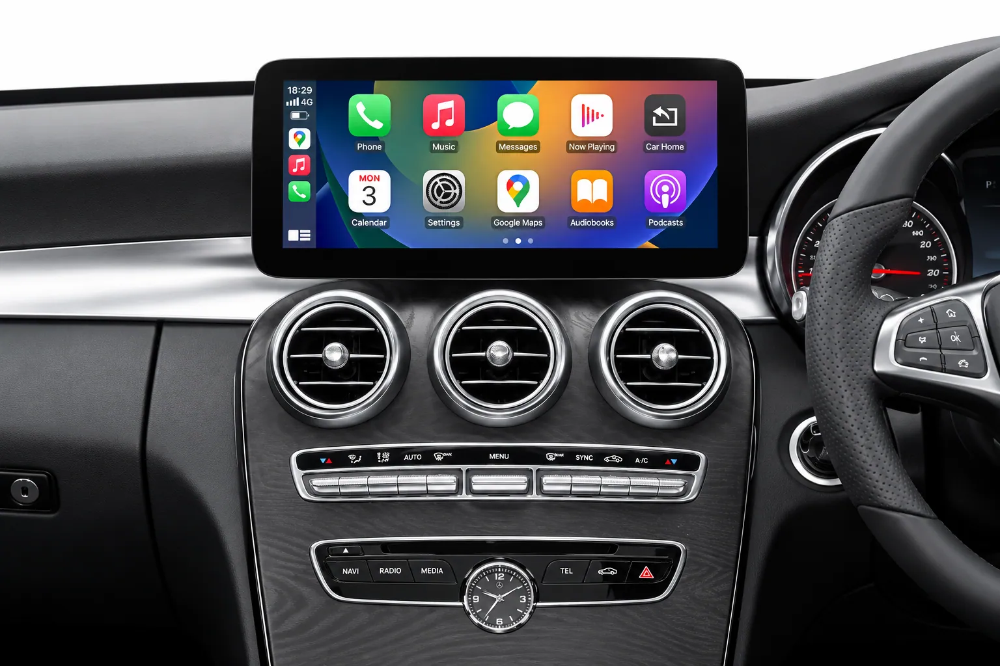
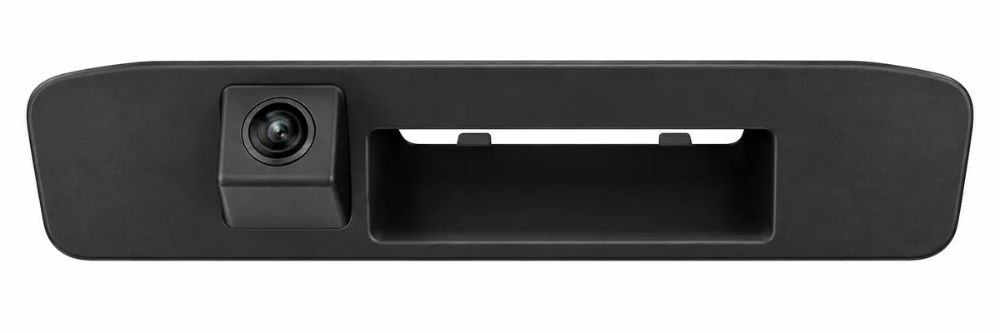
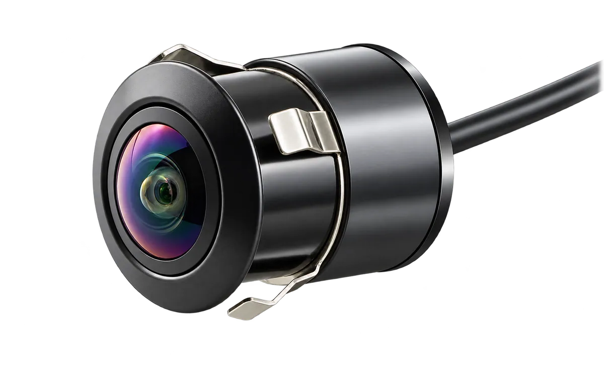

Multimedia upgrade
Mercedes-Benz Multimedia Upgrade — Option 1
Adding modern Apple CarPlay and Android Auto functionality to the existing screen without replacing it.
Premium compact executive car
Sedan / Estate

Adding modern Apple CarPlay and Android Auto functionality to the existing screen without replacing it.

Replacing the factory screen with a new touchscreen featuring modern Apple CarPlay and Android Auto functionality.

A rear-view camera is the perfect addition when upgrading your vehicle. It is installed either in the factory-designated location or integrated so seamlessly that it looks as if it came fitted from the factory.

A front-view camera helps you spot low obstacles and judge the distance to kerbs, making parking and manoeuvring in tight spaces easier.